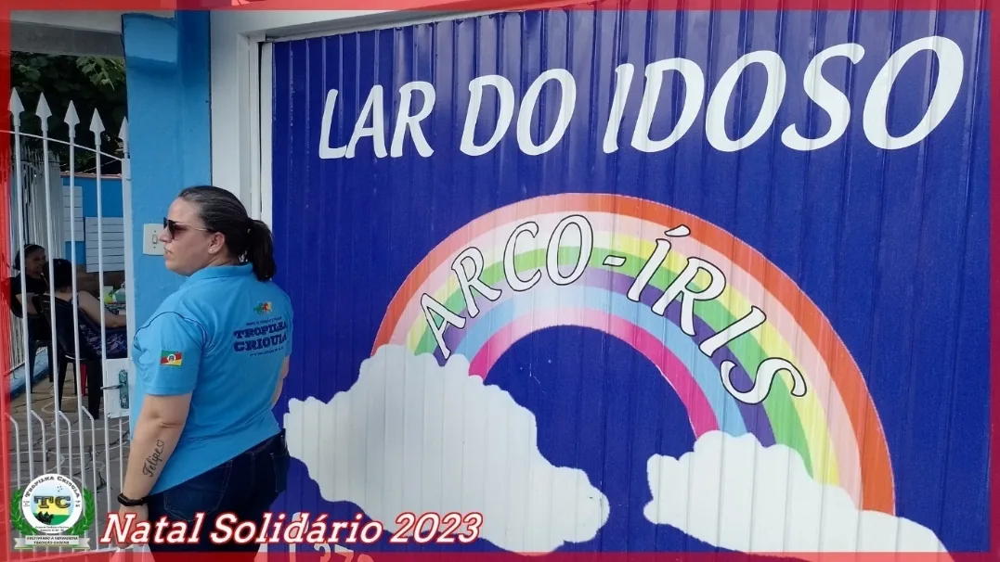
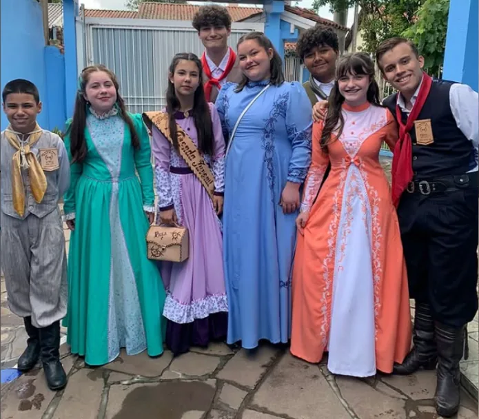

Projetos Sociais
Ação social e defesa de direitos
Solidariedade o ano inteiro, com mais de 300 crianças e 100 idosos atendidos por ano.
Projeto 1
Galeto Solidário
O que é
A principal ação social recorrente
O Galeto Solidário é um almoço comunitário de galeto, prato típico gaúcho, que une cultura, mobilização e solidariedade. A cada edição, dezenas de voluntários cuidam do preparo à brasa, da venda e do atendimento.
Parte da renda é revertida a entidades assistenciais de Sapucaia do Sul, como a Cruz Vermelha, a ACAPASS e o Lar Abrigo Meu Refúgio. A primeira ação nesse formato, em 2021, foi em prol da ACAPASS. As edições mais recentes contam com a parceria do grupo União Solidária, que leva comida a moradores de rua da cidade.
Em 2026, o Galeto chegou à 11ª edição, dessa vez em prol da obra da sede própria do Tropilha.
Em números
Ago/2024 a ago/2026


Informações
Como participar
- Frequência
- Semestral
- Retirada
- Galpão Campeiro do Tropilha, Parque Jayme Caetano Braum, ou Salão da Igreja Luterana, conforme a edição
- Reservas
- Pelo WhatsApp (51) 98088-1334
- Entidades apoiadas
- Cruz Vermelha, ACAPASS, Lar Abrigo Meu Refúgio e outras entidades do município
Projeto 2
Tropilanche
O que é
Solidariedade que vai ao encontro
O Tropilanche é uma ação de rua da Invernada Social: voluntários do Tropilha distribuem lanches (sanduíches e achocolatados) e marmitas quentes a pessoas em situação de rua de Sapucaia do Sul e região, levando também acolhimento e escuta.
A cada mês, a Invernada Social organiza a arrecadação, o preparo e a montagem dos lanches e marmitas e faz a distribuição, em geral à noite. No inverno, reforça as marmitas, porque comida quente também aquece.
A ação é feita com o apoio contínuo do grupo União Solidária de Sapucaia do Sul, que ajuda a destinar lanches e refeições. A finalidade está prevista no estatuto da entidade (art. 2º, inciso III, de assistência social).
Em números
Cada edição
Como ajudar
Doe e participe
Quer doar alimentos ou ajudar no preparo e na distribuição? Fale com a Invernada Social pelo WhatsApp (51) 98088-1334. Também é possível contribuir por PIX, com a chave gtftropilhacrioula@gmail.com.
Projeto 3
Natal Solidário
O que é
Cultura gaúcha como gesto de cuidado
Todo ano, voluntários do Tropilha visitam idosos de Sapucaia do Sul acolhidos em instituições: as três unidades do Lar Arco-Íris e asilos do município. Levam apresentações de música, dança e declamação, confraternização e doações.
O objetivo é acolher e valorizar as pessoas idosas, combater a solidão no fim de ano e promover a convivência entre gerações por meio da cultura gaúcha.
Em números
Alcance


Projeto 4
Outras ações sociais
Campanha do Cobertor
Cada R$ 25 doados viram um cobertor popular para quem enfrenta o frio.
Oficina de brinquedos na ACAPASS
Tarde de brincadeiras gaúchas com crianças e adolescentes acolhidos na Casa de Passagem (2015, 2017, 2018 e 2024).
Tropilha nas Escolas
Vivências de danças, declamação e brincadeiras em escolas públicas e na APAE.
Cheias de 2024
Por cerca de 30 dias, arrecadação, marmitas e distribuição a famílias atingidas, em 7 municípios.
Quem atendemos
Públicos prioritários
- Crianças e adolescentesEscolas, ACAPASS, invernadas, fandango e música
- JovensFandango, Departamento Cultural, música e esportes
- Pessoas idosasNatal Solidário e convivência entre gerações
- Pessoas com deficiênciaParceria com a APAE: grupo “APAExonados pela Tradição”
- Vulnerabilidade socioeconômicaGaleto Solidário e atividades gratuitas
- Pessoas em situação de ruaTropilanche
- Atingidos por eventos climáticosCheias de 2024 e Campanha do Cobertor
- Comunidades periféricasEscolas públicas e bairros de Sapucaia do Sul
Nas escolas
Educação patrimonial
O Tropilha vai até a escola: oficinas de danças tradicionais, declamação, hora do conto, fantoches, brincadeiras e Vaca Parada, adaptadas a cada faixa etária. A ação é apoiada pelo projeto Sementes da Tradição (CTG na Escola), que deu ao Tropilha o 1º lugar entre as entidades da 12ª Região Tradicionalista.


Seja voluntário
Fale com a gente
Informações, inscrições e voluntariado pelo WhatsApp (51) 98088-1334 ou pelo e-mail gtftropilhacrioula@gmail.com.